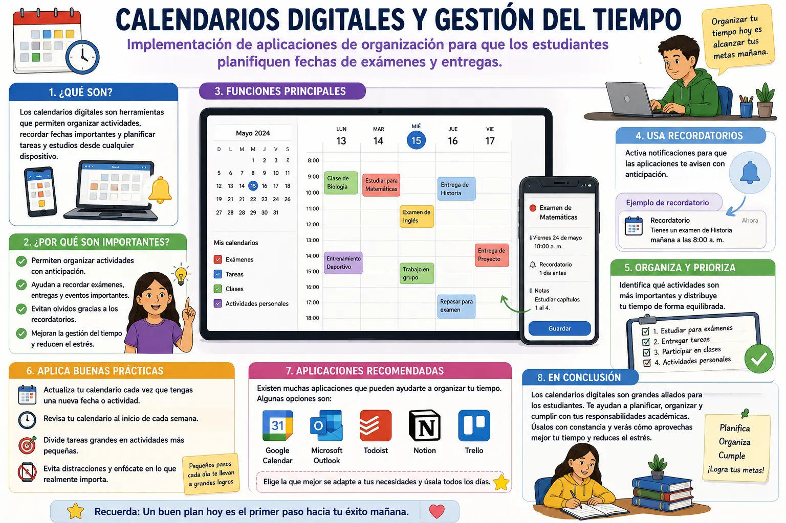

Calendarios digitales y gestión del tiempo
Los calendarios digitales son herramientas que permiten organizar diferentes actividades y compromisos utilizando dispositivos como computadores, tabletas o teléfonos. En el ámbito educativo pueden ayudar a los estudiantes a recordar fechas importantes, como exámenes, trabajos, exposiciones y entregas de tareas. De esta manera, es más fácil tener una visión general de las actividades que se deben realizar.
Una de las principales ventajas de utilizar un calendario digital es que permite organizar las actividades con anticipación. El estudiante puede registrar una fecha, escribir una descripción y establecer el momento en que debe realizarse una determinada tarea. También puede agregar recordatorios para evitar olvidar actividades importantes.
La gestión del tiempo consiste en organizar las horas disponibles para realizar las diferentes responsabilidades. No se trata solamente de llenar un calendario, sino de aprender a establecer prioridades y distribuir las actividades de manera equilibrada. Por ejemplo, si se acerca un examen, se pueden reservar algunos momentos durante varios días para estudiar en lugar de dejar toda la preparación para el último momento.
Las aplicaciones de calendario también permiten clasificar las actividades. Se pueden utilizar diferentes categorías para separar los exámenes, tareas, reuniones, actividades personales o proyectos. Esta organización facilita identificar rápidamente qué actividades se deben realizar y cuáles son las fechas que requieren mayor atención.
Otra función útil son las notificaciones y los recordatorios. Estos pueden avisar con anticipación que se aproxima una actividad o una fecha de entrega. Sin embargo, es importante no depender completamente de las notificaciones. El estudiante también debe revisar periódicamente su calendario y comprobar qué actividades tiene pendientes.
La planificación digital puede ayudar a disminuir el estrés relacionado con las tareas escolares. Cuando las actividades están organizadas y se conoce el tiempo disponible, es más sencillo comenzar con anticipación. Además, dividir un trabajo grande en pequeñas actividades puede hacer que resulte más fácil de realizar y evitar que todo se acumule para el mismo día.
Para utilizar correctamente un calendario digital es recomendable actualizarlo con frecuencia. Cada vez que se conozca una nueva fecha de examen, entrega o actividad, se puede registrar inmediatamente. También es conveniente revisar el calendario al comienzo de la semana para organizar las prioridades y distribuir adecuadamente el tiempo disponible.
En conclusión, los calendarios digitales son herramientas útiles para mejorar la organización y la gestión del tiempo de los estudiantes. Permiten registrar fechas importantes, establecer recordatorios, organizar actividades y planificar los estudios con anticipación. Cuando se utilizan de manera constante y responsable, pueden ayudar a cumplir con las obligaciones académicas y desarrollar hábitos de organización que serán útiles en diferentes etapas de la vida.
